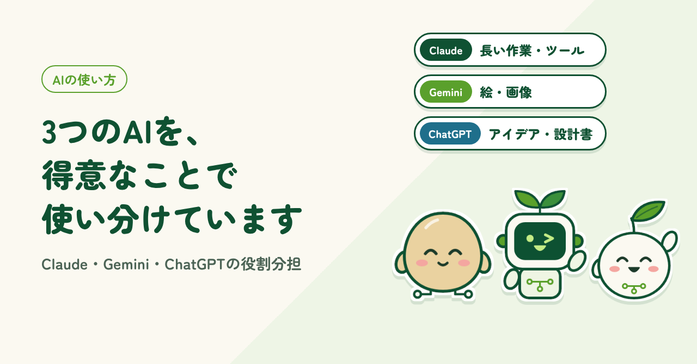
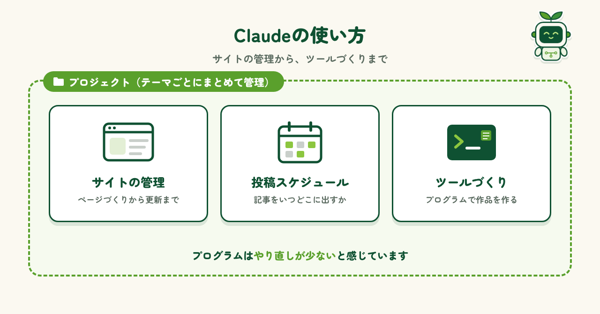
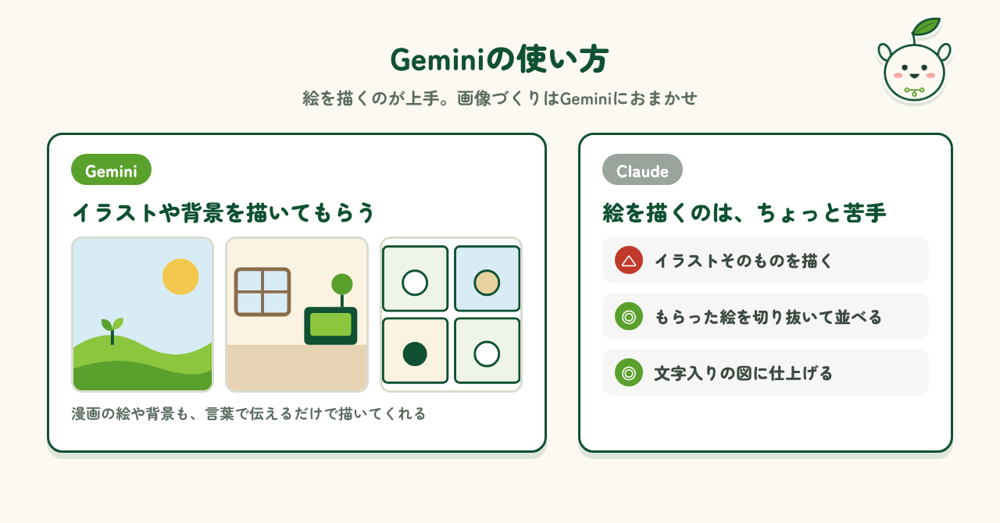
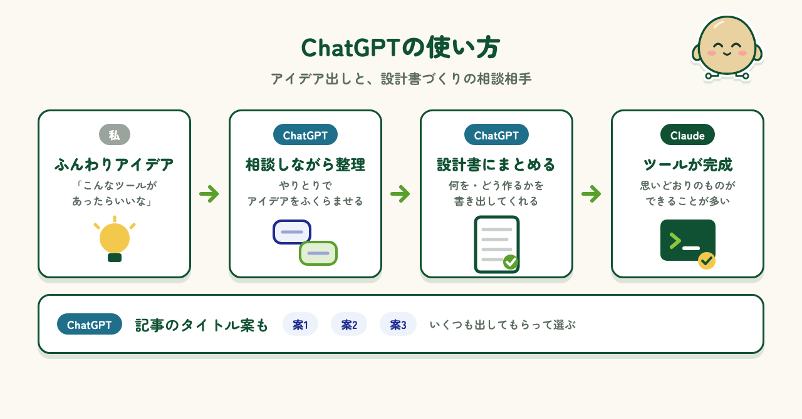
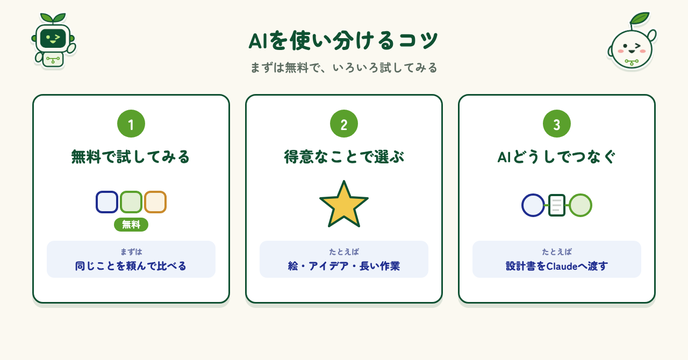

2026.11.09 公開
3つのAIを、得意なことで使い分けています
Claude・Gemini・ChatGPTの3つのAIを、それぞれ何に使っているか。得意なことで役割を分けるコツも紹介します。

はじめに
私はふだん、Claude・Gemini・ChatGPTの3つのAIを使っています。「どれか1つで十分じゃない？」と思われるかもしれません。でも、実際に使ってみると、同じように見えて得意なことが少しずつ違うと気づきました。長い作業をまとめて進めるのが得意なもの、絵を描くのが上手なもの、アイデアをどんどん出してくれるもの。それぞれのよいところを知ってからは、やりたいことに合わせて使い分けるようになりました。この記事では、私が3つのAIをどう使い分けているかを紹介します。
Claude
Claudeには、ウェブページ全体の管理、記事を投稿するスケジュールの管理、それからプログラムを使った作品づくりを任せています。とくに便利なのが「プロジェクト」という機能です。テーマごとに会話や資料をまとめておけるので、前に決めたことを毎回説明し直さなくても、続きから作業を進められます。また、プログラムを書いてもらうときは、ほかのAIよりミスが少なく、やり直しが減ったと感じています。長く続く作業をまとめて任せたいときに、いちばん頼りにしているAIです。

Gemini
Geminiは、画像を作るのがとても上手です。4コマ漫画の絵や、キャラクターがいる部屋の背景などは、Geminiに描いてもらっています。「こんな場面で、この子が右を向いて」と言葉で伝えるだけで、雰囲気のある絵を仕上げてくれます。一方で、Claudeはイラストそのものを描くのは、けっこう苦手なようです。そこで、絵はGeminiに描いてもらい、Claudeにはその絵を切り抜いて並べたり、文字を入れて図に仕上げたりしてもらう、という分担にしています。

ChatGPT
ChatGPTは、アイデア出しがすごく上手です。ツールを作るときは、まずChatGPTを相談相手にして、「こんなものがあったらいいな」という私のふんわりしたアイデアを、やり取りしながら設計書にまとめてもらいます。できあがった設計書をClaudeに渡すと、思いどおりのツールができあがることが多くなりました。最初に考えを整理しておくと、作る段階での行き違いが減るようです。ほかにも、記事のタイトル案をいくつも出してもらい、その中から選ぶのにも使っています。

使い分けのコツ
いま、多くのAIは無料でも使い始められます。だからこそ、いろいろ試してみるのがいちばん大事だと思います。まずは同じことを2つ、3つのAIに頼んで、返ってくる答えを比べてみてください。使っているうちに、「絵ならこれ」「アイデアならこれ」と、それぞれの得意なことが見えてきます。慣れてきたら、ChatGPTで作った設計書をClaudeに渡したように、AIどうしをつないで使うのもおすすめです。1つのAIだけでは難しかったことも、ぐっと進めやすくなりますよ。

まとめ
3つのAIを使ってみてわかったのは、「どれが一番」というより、それぞれに得意なことがあるということです。長い作業をまとめて進めるならClaude、絵を描くならGemini、アイデアを広げるならChatGPT。私はこんなふうに役割を分けて使っています。もちろん、これは今の私の使い方で、AIはどんどん進化していきます。ぜひ気軽にいろいろなAIを試して、自分なりの組み合わせを見つけてみてください。AIが、もっと頼れる相棒になってくれるはずです。
制作メモ
段落の構成と文章の下書きはAI（Claude）と作り、各段落に自分の感想を入れて、1段落ずつ確認・修正しました。図もAIと一緒に作っています。